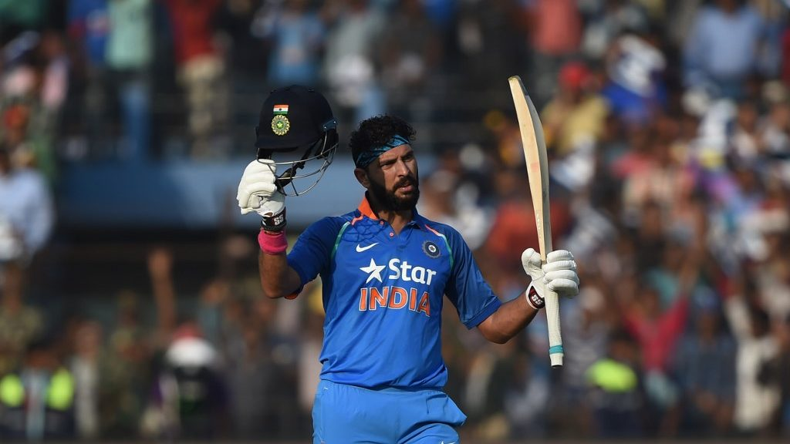

YUVRAJ SINGH
Well Known Survivor...

After scoring 150 against England
Here's a time line of Yuvraj Singh life:
- 1981 : Born in Punjab, India.
- 1995-96 : Debuted for Punjab U-16 Team.
- 1996-97 : Debuted in Punjab U-19 Team & scored 137 in first match against Himachal Pradesh.
- 1997 : Make first class Debut and went out on duck.
- 1999 : First break-out performance against Bihar. Scored 358 Runs and bole toh "Dhaga khol diya"
- 1999 : Call for INDIA U-19 against Lanka U-19.
- 2000 : Played U-19 World Cup and won "Player of the Tournament" for all-round performance.
- 2000 : Selected in India Squad for 2000 ICC Knockout Trophy. And debuted against Kenya in pre-quarterfinal. After few matches Dropped from squad.
- 2001 : Make comeback during the 2001 Coca-Cola Cup in Sri Lanka. He scored a crucial 98* against Sri Lanka in the fifth match of an otherwise disappointing series with the bat but proves useful with the bowl.
- 2002 : NatWest Series known for Dada Celebration.Yuvi proved his selection.
- 2005 : He was the leading run-scorer for India in the 2005 Indian Oil Cup triangular series in Sri Lanka also involving the hosts Sri Lanka and West Indies.
After this he continuiously performed well in each series/tournament.
- 2007 : Vice-Captain for Inaugral T-20 World Cup. 6 Sixes in a over against England to Stuart Broad. Fastest Fifty (just in 12 balls) in any form of International Cricket. In semifinal hit the longest six of the tournament(119 meter to Bret Lee).
- 2011 : Dream run at the 2011 ICC CRICKET WORLDCUP. Won the World cup for GOD and awarded "MAN of the Tournament" for all-round performance of 300+ runs & 15 wickets.
- 2011 : Just after world cup diagnosed with a cancerous tumour stage-1. After varoius stages of chemotherapy he came back to India in 2012.
- 2012 : Make ground for YOUWECAN Cancer Foundation.
- 2013 : Make comeback in team and played some good knock.
- 2017 : Scored his career highest(150 against England).
- 2019 : on 10th June he annouced retiremenet from all form of cricket.
Don't be scared... Be positive... Please don't think that your life is about to end... Take the right advice and act as soon as you can... If there's an issue in your system, don't ignore it.
-- Yuvraj Singh